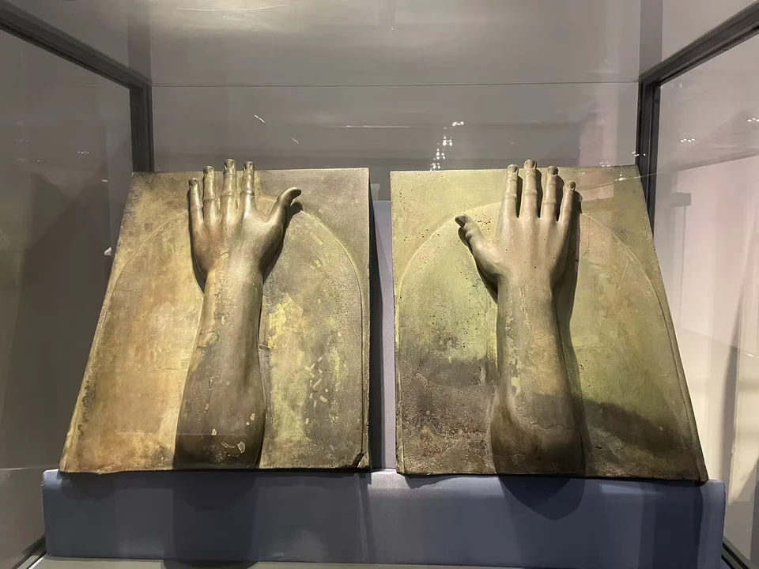
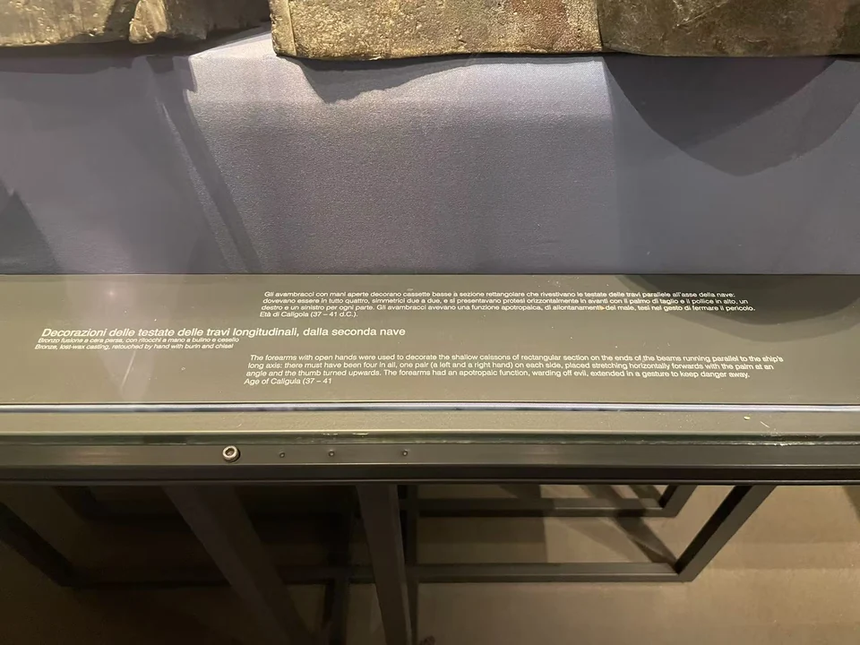

BRONZE / B14
尼米湖第二艘船的手与前臂形梁端装饰（两件）
前臂从包套表面伸出，张开的手仿佛在迎向观看者。两件并列，才能看清它们重复而又各自完整的结构。

- 年代
- 公元37–41年（卡利古拉时期）
- 材料
- 青铜
- 形制
- 船用青铜装饰组
- 收藏与观看
- 罗马国家博物馆 · 马西莫宫 · 罗马
- 馆藏号
- 左手形梁端装饰 编号待核；右手形梁端装饰 编号待核
两件包套，两种视角
展签将两件构件联系到尼米湖第二艘船，属于卡利古拉时期。它们以青铜包住木梁端部，把手与前臂的形象纳入船的结构；INASA的历史照片目录把手形装饰称为具有辟邪意味的形象。 [16] [21]
一张照片接近其中一件，另一张记录两件并列。它们显示同一观看组的不同角度：近看能读手掌与前臂怎样凸起，退后才看见它们与边框的整体关系。
手既是形象，也属于一件建筑般的构件。
换一个角度

现场展签与背景说明

资料与来源
断代、归属与收藏资料
公开档案号34223对应照片记录。两件构件的独立馆藏编号尚待核实，本页暂以两件一组记录。 [21]
基本资料亦参见本页现场展签；照片中的细节与馆方解释分别叙述。